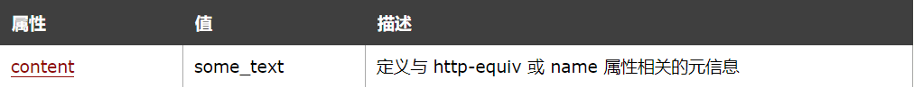
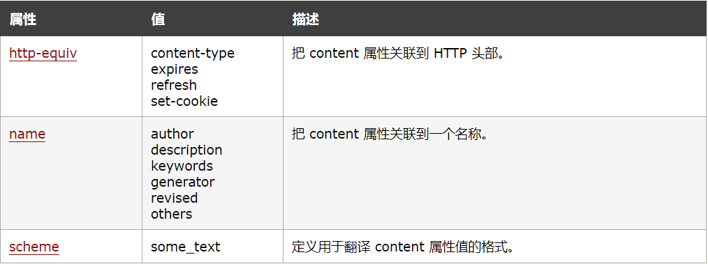
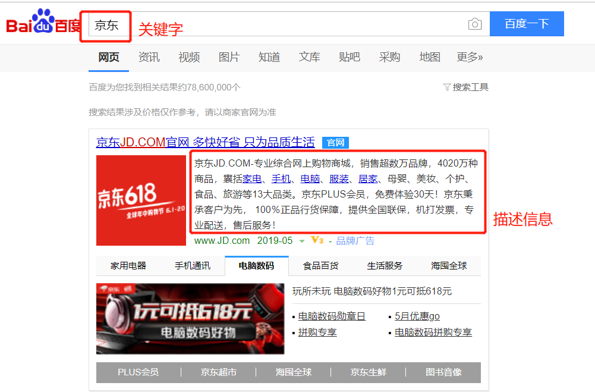
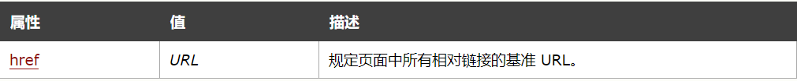
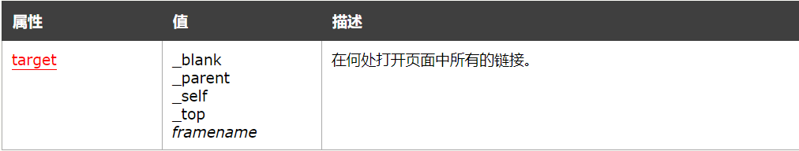
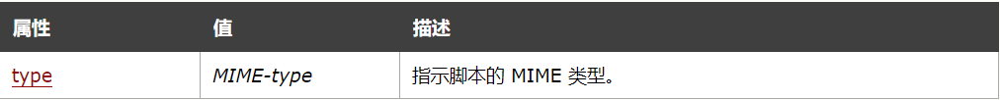
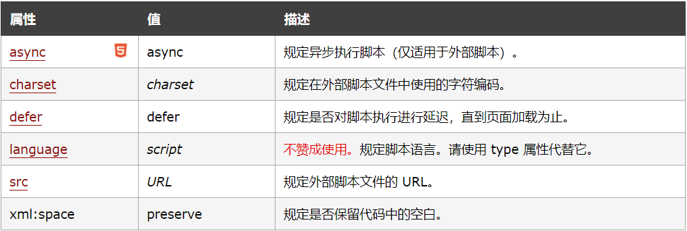

Html <head></head>中标签的含义
我们都知道，HTML的标签可以分为很多种，head 里面的我们称为元信息类标签，诸如title、meta、style、link、base、script这些，他们用来描述文档的一些基本信息。
1. title 标签
- 可定义文档的标题。
<title> 标签是 <head>标签中唯一要求包含的东西。
- 浏览器会以特殊的方式来使用标题，并且通常把它放置在浏览器窗口的标题栏或状态栏上。同样，当把文档加入用户的链接列表或者收藏夹或书签列表时，标题将成为该文档链接的默认名称。
2. meat 标签
- 元素可提供有关页面的元信息（meta-information），比如针对搜索引擎和更新频度的描述和关键词。
- 标签永远位于 head 元素内部。元数据总是以名称/值的形式被成对传递的。
- 设置网页编码：防止网页出现乱码
<meta charset="UTF-8">
必须的属性:

可选的属性：

-
name 属性提供了名称/值对中的名称。HTML 和 XHTML 标签都没有指定任何预先定义的
<meta>名称。通常情况下，您可以自由使用对自己和源文档的读者来说富有意义的名称。- “keywords” 是一个经常被用到的名称。它为文档定义了一组关键字。某些搜索引擎在遇到这些关键字时，会用这些关键字对文档进行分类。
- “description” 它为文档定义了描述信息。比如用户百度搜索“京东”是就会显示京东网站的描述信息。
- 如果没有提供 name 属性，那么名称/值对中的名称会采用 http-equiv 属性的值。

-
http-equiv 属性为名称/值对提供了名称。并指示服务器在发送实际的文档之前先在要传送给浏览器的 MIME 文档头部包含名称/值对。
当服务器向浏览器发送文档时，会先发送许多名称/值对。- 所有服务器都至少要发送一个：content-type:text/html。这将告诉浏览器准备接受一个 HTML 文档。
- 只有浏览器可以接受这些附加的头部字段，并能以适当的方式使用它们时，这些字段才有意义。
- 使用带有 http-equiv 属性的
<meta>标签时，服务器将把名称/值对添加到发送给浏览器的内容头部。例如：
1
2
3
4
5
6<meta http-equiv="charset" content="iso-8859-1">
<meta http-equiv="expires" content="31 Dec 2008">
// 这样发送到浏览器的头部就应该包含：
content-type: text/html
charset:iso-8859-1
expires:31 Dec 2008 -
content 属性提供了名称/值对中的值。
- 该值可以是任何有效的字符串。
- content 属性始终要和 name 属性或 http-equiv 属性一起使用
-
scheme 属性用于指定要用来翻译属性值的方案
- 此方案应该在由
<head>标签的 profile 属性指定的概况文件中进行了定义。
- 此方案应该在由
3. style 标签
- 标签用于为 HTML 文档定义样式信息。
- 在 style 中规定在浏览器中如何呈现 HTML 文档。
- type 属性是必需的，定义 style 元素的内容。唯一可能的值是 “text/css”。
- style 元素位于 head 部分中。
- 如需链接外部样式表，请使用
<link>标签。
1 | <style type="text/css"> |
4. link 标签
link标签常用的场景有两种：作为网页图标标签；链接外部CSS
- ref属性：规定当前文档与被链接文档之间的关系
- href属性：规定被链接文档的位置
- type属性：规定被链接文档的 MIME 类型
4.1 作为网页图标标签
1 | <link rel="icon" href="favicon.ico"> |
4.2 链接外部CSS
1 | <link rel="stylesheet" type="text/css" href="css/base.css"> |
5. base 标签
标签为页面上的所有链接规定默认地址或默认目标。通常情况下，浏览器会从当前文档的 URL 中提取相应的元素来填写相对 URL 中的空白。使用 <base> 标签可以改变这一点。浏览器随后将不再使用当前文档的 URL，而使用指定的基本 URL 来解析所有的相对 URL。这其中包括 <a>、<img>、<link>、<form> 标签中的 URL。
必选属性：

可选属性：

6. script 标签
- 用于定义客户端脚本，比如 JavaScript。
- script 元素既可以包含脚本语句，也可以通过 src 属性指向外部脚本文件。
- 必需的 type 属性规定脚本的 MIME 类型。
- JavaScript 的常见应用时图像操作、表单验证以及动态内容更新。
- 假如此元素内部的代码没有位于某个函数中，那么这些代码会在页面被加载时被立即执行。
<frameset>标签之后的脚本会被忽略。
必选属性：

可选属性：

引入外部js文件：
1 | <script src="js/exercise.js"></script> |
编写内部js代码：
1 | <script> |